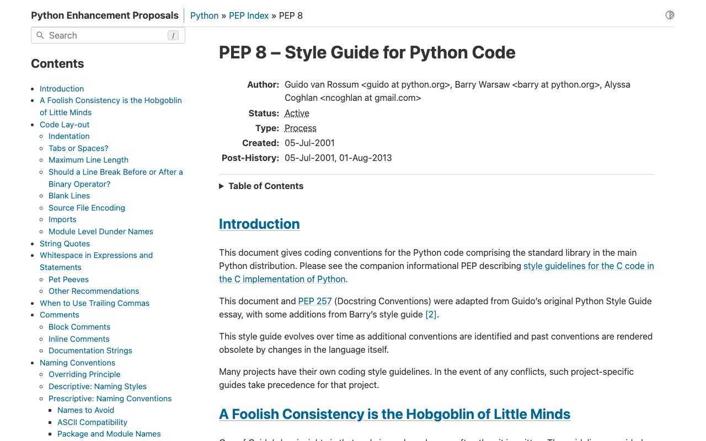
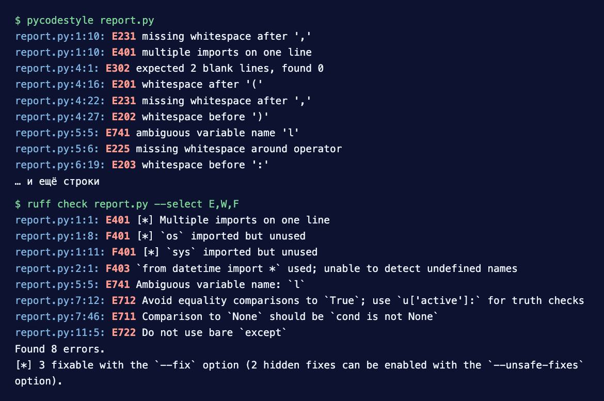

Справочник «Стандарты и сертификаты» · тема 3
Глава 5
PEP 8: оформление
кода на Python
PEP 8 — стандарт оформления кода на Python. Его соблюдают стандартная библиотека языка и большинство проектов, а линтеры проверяют его автоматически. В главе правила разобраны по разделам документа, к каждому — пара примеров: как пишут без стандарта и как по нему. В конце — разбор настоящего файла и вывод линтера.
- Документ
- PEP 8 «Style Guide for Python Code», 2001, обновляется до сих пор
- Уровень
- Базовый
- Где встречается
- Любой проект на Python, ревью кода, проверки в CI
- Зачем это знать
- Чтобы код читался одинаково и проходил проверку линтера
§1Что такое PEP и зачем PEP 8
PEP (Python Enhancement Proposal) — документ с предложением по развитию языка Python. У каждого PEP есть номер, автор и статус. PEP 8 написали Гвидо ван Россум, Барри Уорсо и Ник Коглан.
В начале документа приведён довод: код читают гораздо чаще, чем пишут. Если в проекте код оформлен одинаково, читателю не приходится разбираться в чужой расстановке пробелов и переносов.
Интерпретатор PEP 8 не проверяет: программа с нарушениями запустится. Обязательным его делает проект — правилом в README, настройкой линтера и проверкой в CI, которая не пропускает изменение с нарушениями.

Сам PEP 8 разрешает отступать от правил, если правило ухудшает читаемость или ломает единообразие с уже написанным кодом. Раздел об этом называется «A Foolish Consistency is the Hobgoblin of Little Minds».
§2Отступы
Один уровень отступа — 4 пробела. Табуляцию не используют; смешивать табуляцию и пробелы в одном файле Python 3 запрещает.
Отступ тела функции
def total(prices):
result = 0
for p in prices:
result += p
return resultdef total(prices):
result = 0
for price in prices:
result += price
return resultСлева отступы в два и шесть пробелов: уровни вложенности на глаз не различить. Справа каждый уровень — четыре пробела.
Если строка не помещается, её продолжают внутри скобок. Стандарт допускает два способа: выровнять продолжение по открывающей скобке или сделать висячий отступ — первая строка заканчивается скобкой, остальные сдвинуты на уровень.
Продолжение строки внутри скобок
result = send_report(user_id, period_start,
period_end, include_archived)# выравнивание по открывающей скобке
result = send_report(user_id, period_start,
period_end, include_archived)
# висячий отступ
result = send_report(
user_id, period_start,
period_end, include_archived,
)Слева продолжение сдвинуто произвольно и сливается со следующей строкой кода. Справа видно, что строки относятся к одному вызову.
Висячий отступ в заголовке функции
def create_ticket(
title, description,
priority, author):
validate(title)
return save(title)def create_ticket(
title, description,
priority, author):
validate(title)
return save(title)В заголовке функции параметры сдвигают на два уровня, иначе они встают вровень с телом функции и сливаются с ним.
§3Длина строки и перенос
Строка кода — не длиннее 79 символов, строка комментария или документации — не длиннее 72. Стандарт разрешает команде договориться о пределе до 99 символов для кода. Форматировщик black по умолчанию использует 88.
Переносят внутри круглых, квадратных и фигурных скобок. Обратную косую черту в конце строки применяют, только когда скобок нет, например в длинной инструкции with в старых версиях Python.
Двоичный оператор ставят в начале новой строки. В конце предыдущей строки его не оставляют. Так все слагаемые видны в одном столбце, как в математической записи.
Где переносить оператор
income = (gross_wages +
taxable_interest +
(dividends - qualified_dividends) -
ira_deduction -
student_loan_interest)income = (gross_wages
+ taxable_interest
+ (dividends - qualified_dividends)
- ira_deduction
- student_loan_interest)Пример взят из самого PEP 8. Справа знак стоит перед числом, и сразу видно, какое слагаемое прибавляется, а какое вычитается.
Длинное условие
if user.is_active and user.email_confirmed and not user.is_blocked and user.role in ('teacher', 'admin'):
grant_access(user)if (user.is_active
and user.email_confirmed
and not user.is_blocked
and user.role in ('teacher', 'admin')):
grant_access(user)Условие заключено в скобки и разбито по одному требованию на строку. Дополнительный отступ отделяет условие от тела if.
§4Пустые строки и кодировка
Функции и классы верхнего уровня отделяют двумя пустыми строками, методы внутри класса — одной. Внутри функции пустой строкой разделяют логические шаги, но не после каждой строки.
Пустые строки между определениями
import os
def load(path):
return open(path).read()
class Report:
def __init__(self, title):
self.title = title
def render(self):
return self.title.upper()import os
def load(path):
return open(path).read()
class Report:
def __init__(self, title):
self.title = title
def render(self):
return self.title.upper()Справа границы функций и классов видны сразу, даже при быстрой прокрутке файла.
Файлы сохраняют в UTF-8; строку с указанием кодировки в начале файла для UTF-8 не пишут. Имена в коде — латиницей, даже если комментарии на русском.
§5Импорты
Каждый модуль импортируют на отдельной строке. Импорты стоят в начале файла, после строки документации модуля, и идут тремя группами: стандартная библиотека, сторонние пакеты, модули своего проекта. Группы разделяют пустой строкой.
Порядок и группы импортов
from .models import Ticket import os, sys import requests from datetime import date from fastapi import FastAPI from .db import *
import os import sys from datetime import date import requests from fastapi import FastAPI from .db import get_session from .models import Ticket
Слева импорты перемешаны, два модуля в одной строке и импорт со звёздочкой. Справа по группам видно, от чего зависит модуль, а каждое имя импортировано явно.
Импорт со звёздочкой from module import * не используют: непонятно, какие имена появились в модуле, и одно из них может незаметно заменить другое. Абсолютные импорты предпочтительнее относительных. Порядок импортов расставляет isort или ruff с правилом I.
§6Пробелы в выражениях
Пробелов нет сразу внутри скобок, перед запятой, двоеточием и точкой с запятой, перед открывающей скобкой вызова и индекса. Вокруг присваивания и сравнений — по одному пробелу.
Пробелы внутри скобок и перед ними
spam( ham[ 1 ], { eggs: 2 } )
print (x , y)
dct ['key'] = lst [index]
if x == 4 : print(x , y)spam(ham[1], {eggs: 2})
print(x, y)
dct['key'] = lst[index]
if x == 4:
print(x, y)Слева пробелы стоят внутри скобок и перед ними, а тело if записано в той же строке. PEP 8 не рекомендует ни то, ни другое; справа тело if перенесено на отдельную строку.
Пробелы вокруг операторов
i=i+1 submitted +=1 x = x*2 - 1 hypot2 = x*x+y*y c = (a+b) * (a-b)
i = i + 1 submitted += 1 x = x*2 - 1 hypot2 = x*x + y*y c = (a+b) * (a-b)
Вокруг присваивания пробелы обязательны. В выражении с операторами разного приоритета пробелы ставят вокруг операторов с низшим приоритетом: x*2 - 1 читается как «x на 2, минус 1».
Знак равенства в аргументах
def connect(host, port = 5432, timeout = 30):
...
connect(host = 'db', port = 6432)
def munge(sep:str='-', limit: int=10):
...def connect(host, port=5432, timeout=30):
...
connect(host='db', port=6432)
def munge(sep: str = '-', limit: int = 10):
...Для именованного аргумента и значения по умолчанию пробелы вокруг = не ставят. Исключение — параметр с аннотацией: там пробелы нужны, sep: str = '-'.
Пробелы в конце строки не оставляют: их не видно, но они попадают в историю изменений и дают ложные различия.
§7Висячая запятая
Если элементы списка, словаря или аргументы записаны по одному на строку, после последнего ставят запятую, а закрывающую скобку — на отдельной строке.
Запятая после последнего элемента
FILES = [
'setup.cfg',
'tox.ini'
]FILES = [
'setup.cfg',
'tox.ini',
]Когда добавят третий файл, справа в истории изменений будет одна новая строка. Слева изменятся две: к старой строке придётся дописать запятую.
Кортеж из одного элемента запятой обязан заканчиваться: (name,). Без запятой это просто значение в скобках.
§8Комментарии
Комментарий объясняет, почему код написан так. Пересказывать, что делает код, не нужно: это видно из самого кода. Комментарий начинается с # и пробела. Комментарий в конце строки отделяют от кода минимум двумя пробелами. PEP 8 считает комментарий, который расходится с кодом, хуже отсутствия комментария, поэтому при изменении кода комментарий исправляют тоже.
Комментарий в конце строки
x = x + 1 # прибавить единицу retries=3#число попыток
x = x + 1 # компенсация рамки: ширина считается без неё retries = 3 # провайдер разрывает соединение после 3 ошибок
Слева комментарии повторяют код. Справа они сообщают то, чего в коде нет: причину выбора значения.
Блочный комментарий
#проверяем дубли
#потому что форма не проверяет
if exists(email):
raise DuplicateEmail(email)# Форма регистрации не проверяет, занята ли почта (задача #198),
# поэтому повтор отсекается здесь, до записи в базу.
if exists(email):
raise DuplicateEmail(email)Блочный комментарий пишут полными предложениями, с прописной буквы. Каждая строка начинается с # и пробела.
§9Имена
| Что | Стиль | Пример |
|---|---|---|
| модуль | короткие строчные, при необходимости с подчёркиванием | backup.py, send_welcome.py |
| пакет | короткие строчные, без подчёркивания | reports |
| класс | каждое слово с прописной, слитно (CapWords) | TicketRepository |
| исключение | как класс, с окончанием Error | DuplicateEmailError |
| функция, метод, переменная | строчные через подчёркивание (snake_case) | load_profile, user_id |
| константа модуля | прописные через подчёркивание | MAX_RETRIES |
| внутреннее имя | с одним подчёркиванием в начале | _parse_row |
| первый аргумент метода | self; метода класса — cls | def render(self) |
Имена переменных, функций и классов
class ticket_repo:
def LoadAll(self):
l = []
for O in self.Items:
l.append(O)
return l
MaxRetries = 3class TicketRepository:
def load_all(self):
tickets = []
for ticket in self.items:
tickets.append(ticket)
return tickets
MAX_RETRIES = 3PEP 8 отдельно запрещает однобуквенные имена l, O и I: в некоторых шрифтах их не отличить от единицы и нуля.
Имя, совпадающее с встроенным
def count(list, id, type):
return len([x for x in list if x.type == type])def count(items, item_id, kind):
return len([x for x in items if x.kind == kind])Слева параметры закрывают встроенные list, id и type: внутри функции их уже не вызвать. Если нужное имя занято, PEP 8 советует добавить подчёркивание в конце: class_.
§10Рекомендации по программированию
Последний раздел PEP 8 посвящён приёмам, при которых код ведёт себя предсказуемо.
Сравнение с None, True и пустотой
if result == None:
...
if is_active == True:
...
if len(tickets) == 0:
...if result is None:
...
if is_active:
...
if not tickets:
...С None сравнивают через is: оператор == можно переопределить в классе. Логическое значение и пустой список проверяют самим значением.
Проверка типа
if type(price) == int:
...if isinstance(price, int):
...isinstance учитывает наследование: значение подкласса int тоже пройдёт проверку.
Начало и конец строки
if filename[-4:] == '.csv':
...
if url[:8] == 'https://':
...if filename.endswith('.csv'):
...
if url.startswith('https://'):
...Срезы с числами ломаются, когда меняется длина образца. Методы читаются как обычная фраза.
Перехват исключений
try:
rows = load(path)
except:
rows = []try:
rows = load(path)
except FileNotFoundError:
rows = []Голый except перехватывает всё, даже нажатие Ctrl+C и опечатку в имени переменной. Перехватывают только то исключение, которое умеют обработать.
Объём блока try
try:
value = collection[key]
result = handle(value)
except KeyError:
result = key_not_found(key)try:
value = collection[key]
except KeyError:
result = key_not_found(key)
else:
result = handle(value)Слева KeyError изнутри handle будет ошибочно принят за отсутствие ключа. В блоке try оставляют только строку, которая может вызвать ожидаемое исключение.
Единообразный return
def discount(user):
if user.is_student:
return 0.2
if user.is_teacher:
return 0.1def discount(user):
if user.is_student:
return 0.2
if user.is_teacher:
return 0.1
return 0.0Слева для остальных пользователей функция молча вернёт None, и расчёт цены упадёт далеко от причины. Если функция что-то возвращает, она возвращает значение на любом пути.
Лямбда в переменной
square = lambda x: x * x
def square(x):
return x * xУ функции, созданной через def, есть имя: оно будет в сообщении об ошибке и в отладчике. Лямбду используют там, где функция нужна один раз, например в sorted(..., key=lambda t: t.date).
Работа с файлом
f = open('report.csv')
data = f.read()
f.close()with open('report.csv', encoding='utf-8') as f:
data = f.read()Конструкция with закроет файл даже при исключении. Кодировку указывают явно: по умолчанию в Windows она другая.
§11Разбор файла целиком
Ниже — файл, собранный «на скорую руку», и тот же файл после приведения к PEP 8. Поведение программы не изменилось.
import os,sys
from datetime import *
import requests
def MakeReport( Users,Date ):
l=[]
for u in Users :
if u['active']==True and u['email']!=None:
l.append( u['name']+' '+u['email'] ) # добавить
try:
r=requests.post('https://api.example/report',json={'rows':l,'date':str(Date)})
except:
return None
return r.status_codeimport requests
REPORT_URL = 'https://api.example/report'
def make_report(users, report_date):
"""Отправить список активных пользователей с почтой; вернуть код ответа."""
rows = [
f"{user['name']} {user['email']}"
for user in users
if user['active'] and user['email'] is not None
]
payload = {'rows': rows, 'date': report_date.isoformat()}
try:
response = requests.post(REPORT_URL, json=payload, timeout=10)
except requests.RequestException:
return None
return response.status_code| Что изменилось | Правило PEP 8 |
|---|---|
убраны неиспользуемые os, sys и импорт со звёздочкой | импорты |
MakeReport → make_report, l → rows | имена |
== True и != None заменены | рекомендации по сравнениям |
| адрес вынесен в константу, длинная строка разбита | длина строки, имена констант |
голый except заменён конкретным исключением | рекомендации по исключениям |
| пробелы внутри скобок убраны, вокруг присваиваний добавлены | пробелы в выражениях |
| добавлена строка документации | PEP 257, следующая глава |
§12Как проверяют соответствие
Вручную PEP 8 не проверяют: это делают программы. Линтер находит нарушения и называет их кодом. Форматировщик сам переписывает оформление.
| Инструмент | Что делает | Команда |
|---|---|---|
| pycodestyle | проверяет оформление по PEP 8; коды E и W | pycodestyle report.py |
| flake8 | pycodestyle плюс поиск ошибок (неиспользуемые импорты); коды E, W, F | flake8 . |
| ruff | ошибки (F) и правила PEP 8 об импортах, сравнениях и именах; работает быстро и умеет исправлять; правила пробелов в нём пока в предварительном режиме | ruff check . --fix |
| black, ruff format | переписывает оформление файла целиком | black . · ruff format . |

| Код | Что означает |
|---|---|
| E201, E202 | пробел сразу после «(» или перед «)» |
| E225 | нет пробелов вокруг оператора |
| E231 | нет пробела после запятой |
| E261 | меньше двух пробелов перед комментарием в конце строки |
| E302 | ожидались две пустые строки |
| E501 | строка длиннее допустимого |
| E711 | сравнение с None через == или != |
| E712 | сравнение с True или False через == |
| E722 | голый except |
| E741 | неоднозначное имя: l, O, I |
| F401 | импорт не используется |
| F403 | импорт со звёздочкой |
Проверку включают в CI: изменение, которое не проходит линтер, не сливают в основную ветку. Настройки хранят в pyproject.toml, чтобы у всех участников они были одинаковыми.
[tool.ruff] line-length = 88 [tool.ruff.lint] select = ["E", "W", "F", "I", "N"] # оформление, ошибки, импорты, имена
§13Частые ошибки
§14Проверьте себя
- Сколько пробелов в одном уровне отступа и какова наибольшая длина строки кода и комментария?
- Где по PEP 8 ставят двоичный оператор при переносе длинного выражения? Почему?
- В каком порядке и какими группами записывают импорты?
- Когда вокруг знака = в аргументах ставят пробелы, а когда нет?
- Как по PEP 8 называют класс, исключение, функцию и константу? Приведите по примеру.
- Почему с None сравнивают через is и почему голый except считается ошибкой?
- Что сообщают коды E501, E711 и F401 в выводе линтера?
4 пробела79 / 72 символаоператор в начале строки2 пустые строки — верхний уровеньвисячая запятаяsnake_case — функцииCapWords — классы…Error — исключенияUPPER_CASE — константыне l, O, Iis Noneif not itemsisinstanceexcept конкретноеwith open(...)ruff check --fixblack · ruff formatpyproject.tomlпроверка в CIСправочник «Стандарты и сертификаты» · глава 5Макаров Максим Николаевич